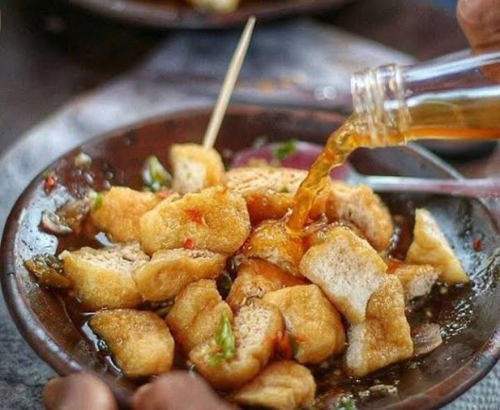

Tahu Gejrot
Sejarah
Tahu Gejrot adalah jajanan ikonik khas jalanan Cirebon yang sudah dikenal luas. Nama "gejrot" berasal dari suara saat bumbu disiramkan ke tahu. Jajanan ini menjadi simbol kuliner street food Cirebon yang autentik.
Ciri Khas
- Tahu goreng disiram bumbu cuka, gula merah, cabai, dan bawang.
- Perpaduan rasa manis, pedas, dan asam yang khas.
Bahan Utama
- Tahu goreng
- Gula merah
- Cabai
- Bawang merah
- Bawang putih
- Cuka
Cara Penyajian
Tahu dipotong kecil-kecil lalu disiram kuah segar dari campuran gula merah, cuka, dan cabai yang diulek langsung saat disajikan.
Keunikan
- Perpaduan rasa manis, pedas, dan asam yang unik.
- Cocok sebagai camilan kapan saja.
- Harga terjangkau dan mudah ditemukan di penjuru Cirebon.